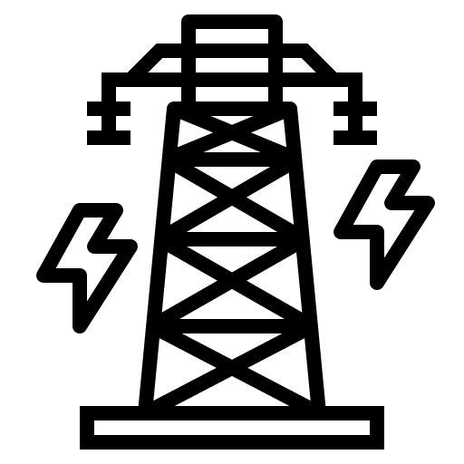
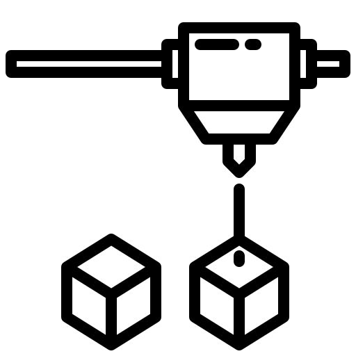

Industri 1.0 (mulai 1750)
Penggunaan mesin uap untuk menggantikan tenaga manusia dan hewan.

Industri 2.0 (mulai 1870)
Penggunaan listrik dan sistem produksi massal.

Industri 3.0 (mulai 1969)
Penggunaan elektronik dan teknologi informasi untuk otomatisasi produksi.
Industri 4.0 (diperkenalkan 2011)
Integrasi teknologi digital, internet of things (IoT), dan kecerdasan buatan.